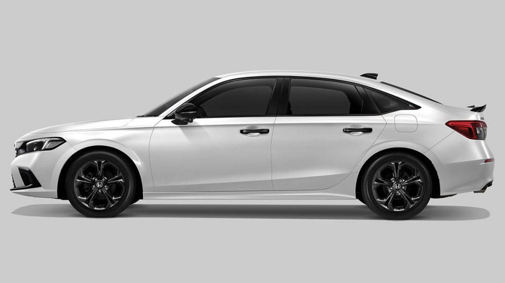

HONDA CIVIC FE RS
INTRODUCTION

no such thing as a perfect car for everyone as the needs and preferences of each differ from one another. However, I have a theory that if you plot a Venn diagram of the common needs of most Malaysian car buyers, one of the cars sitting at the intersection is the 2022 Honda Civic.
So what do Malaysian car buyers prefer? Well, according to a 2020 survey by Carsome on the most important considerations when it comes to buying new cars, the list goes (in order, from most important to least):
Appearance and driving performance
Pre launch concept cars
 Powered by a Passion; refined in its technology and power. Inspired by a Legacy;
uniquely rebuilt within a refreshingly open interior. From looks to driving pleasure,
step in and feel exhilaration take over. This is the Future. This is the Civic.
Powered by a Passion; refined in its technology and power. Inspired by a Legacy;
uniquely rebuilt within a refreshingly open interior. From looks to driving pleasure,
step in and feel exhilaration take over. This is the Future. This is the Civic.
.jpg)